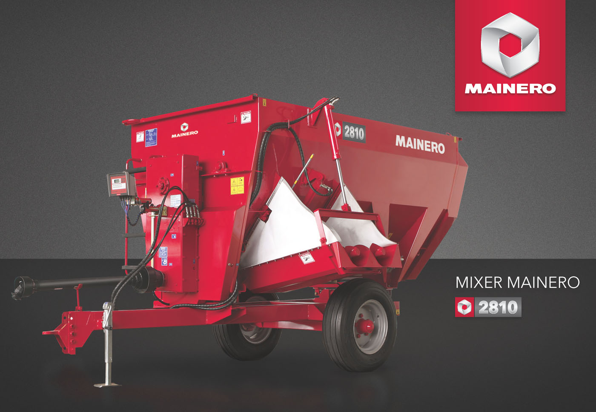
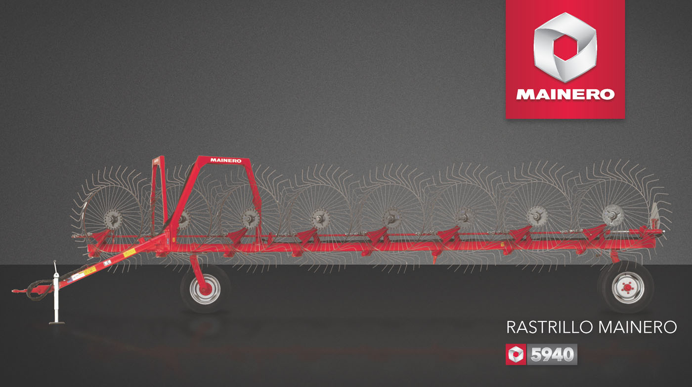
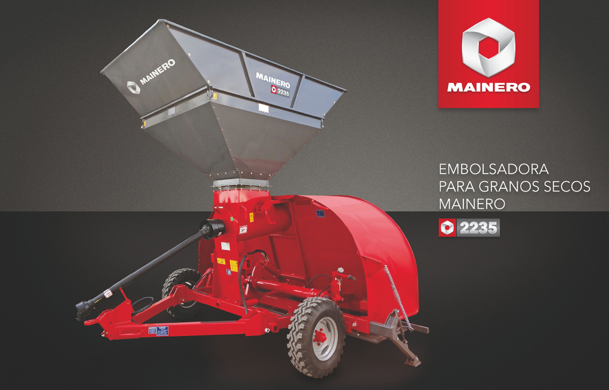
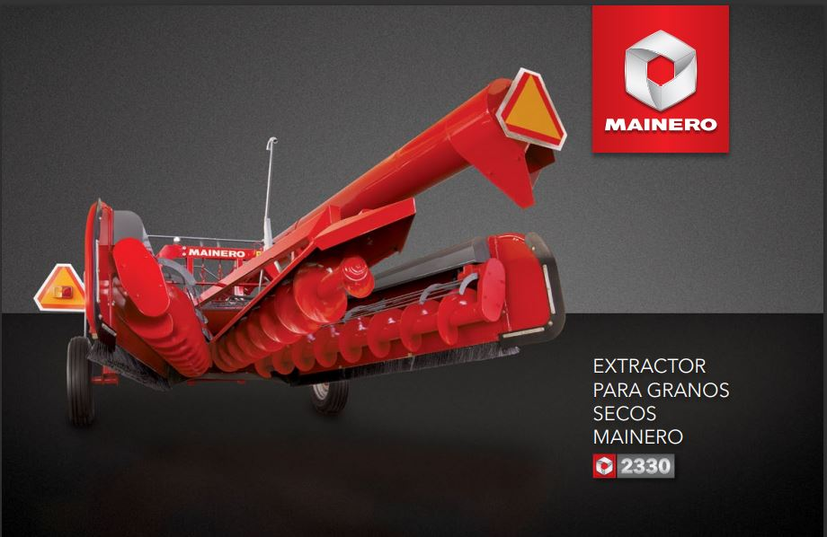
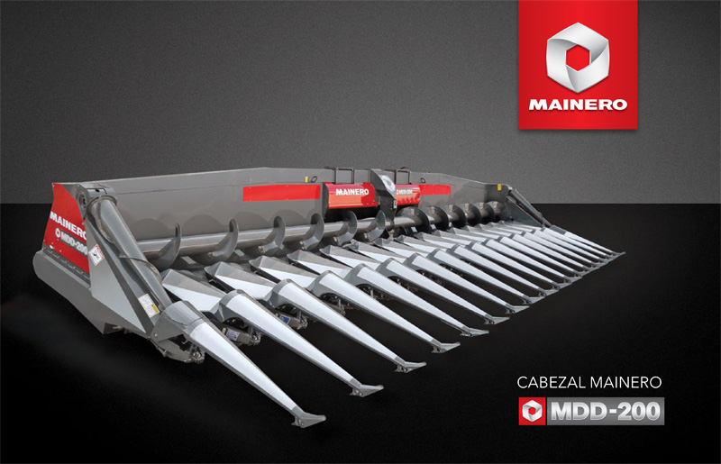

<div class="grid-container">
    <div class="grid-item grid-productos">
        <div class="grid-mixer">
            <p>Los mezcladores 2810 fueron desarrollados y diseñados para desenvolverse eficazmente en condiciones de
                producción exigentes pudiendo acceder a los comederos, aún en días lluviosos o durante largos temporales
                El eje de ruedas se encuentra próximo al centro de gravedad del equipo por lo que el peso transferido a
                la barra de tiro del tractor es el indispensable para mantener la estabilidad en el traslado. No
                obstante, la posición del eje de ruedas es regulable para adecuar el peso en la lanza a cada situación
                de trabajo.
            </p>
        </div>
        <div class="grid-rastrillo"> 
            <p>Con el rastrillo MAINERO 5940 usted puede trabajar hasta una velocidad de 15 km/h logrando así mayor
                cantidad de hectáreas por día, dejando el pasto acondicionado para luego hacer la reserva seleccionada.
                Este rastrillo necesita para su funcionamiento un tractor de 40 CV con una salida hidráulica simple
                efecto, para subir las ruedas recolectoras. Posee 8 ruedas de barrido de 1520 mm de diámetro, con 40
                púas cada una de 8 mm de diámetro. Estas ruedas de barrido tienen flotación independiente. Utiliza dos
                neumáticos 6.00 x 16 – tipo agrícola.</p>
        </div>
        <div class="grid-embolsadora"> 
            <p>El modelo 2235 está diseñado para bolsas de 9 pies de diámetro (2.70 metros). Con gran capacidad de
                almacenamiento de hasta 4 ton/metro lineal de bolsa (280 ton. en bolsas de 75 metros).
                Con Sinfín de 450 mm de diámetro: elevada velocidad de embolsado (más de 400 ton/hora) y ala de sinfín
                de 8 mm de espesor. El túnel de llenado por su forma “aplastada”, favorece el flujo natural del material
                dentro de las
                bolsas, proporcionando un llenado parejo que permite aprovechar al máximo su capacidad de
                almacenamiento.</p>
        </div>
        <div class="grid-extractor"> 
            <p>Sistema de extracción mecánico: la extracción se realiza a través de un sistema mecánico compuesto por
                tres sinfines: uno principal central y dos sinfines barredores laterales. La elección de un sistema
                mecánico radica en que permite alcanzar elevados rendimientos de trabajo -100 a 120 tn/h- utilizando
                tractores de baja potencia (mínimo 70 CV DIN), con lo cual se reducen notablemente los costos de
                amortización, mano de obra y combustible.
                Adaptable a distintos tamaños de bolsas. Para adaptarse a bolsas de 5 a 10 pies de diámetro (1,52 a 3,04
                metros) se debe ajustar el ancho de extracción mediante la apertura o cierre de los sinfines laterales,
                aún sobre la marcha. Dicha regulación se efectúa a través de dos registros manuales..</p>
        </div>
        <div class="grid-cabezal"> 
            <p>Nuevo Cabezal para maíz Mainero MDD-200, para Múltiples Distanciamientos y Direcciones. La segunda
                generación del cabezal único en su tipo en el mundo. Con el objeto de ampliar aun más el vasto rango de condiciones de cultivos en las que ofrece un trabajo
                destacado sin incrementar las pérdidas, manteniendo los distanciamientos entre unidades recolectoras ya
                utilizados (525 mm y 508 mm).Se rediseñaron nuevamente todos los elementos que toman contacto con las
                plantas con el objeto de mejorar su performance en aquellas condiciones más extremas como cultivos de
                bajo porte (planta poco flexible) y en condiciones de suelos muy sueltos, en los cuales ante el contacto
                con la puntera, las plantas de bajo porte tienden a desarraigarse en lugar de flexionar y cultivos
                extremadamente secos en los que la minimización del contacto redunda en reducción de riesgos de
                desprendimiento de espigas o quebrado de tallos.</p>
        </div>
    </div>
</div>